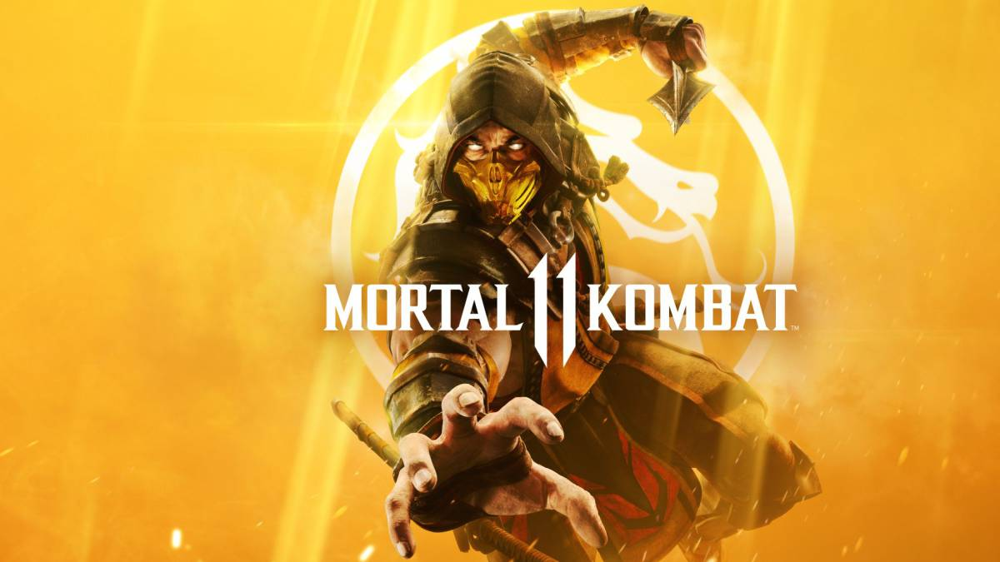

Mortal Kombat 11
Mortal Kombat está de volta, melhor do que nunca, em uma evolução da icônica franquia.
Todas as variações de customização de personagens lhe dão liberdade total para personalizar os lutadores e torná-los únicos. Sinta-se mais perto da luta com os crânios rachados e olhos saltados dos novos gráficos. Com lutadores clássicos, novos e antigos, a incrível cinemática do modo história de Mortal Kombat continua a contar a saga épica de 25 anos atrás.
DRAGON BALL FIGHTERZ
DRAGON BALL FighterZ foi inspirado no que torna a série DRAGON BALL tão famosa: lutas infinitas e espetaculares entre guerreiros poderosos.

NARUTO SHIPPUDEN: Ultimate Ninja STORM 4
A última obra da aclamada série STORM leva você em uma jornada colorida e de tirar o fôlego. Aproveite o sistema de batalha totalmente renovado e prepare-se para mergulhar nas lutas mais épicas que você já viu na série NARUTO SHIPPUDEN: Ultimate Ninja STORM!
Em NARUTO SHIPPUDEN: Ultimate Ninja STORM 4, você poderá usar um amplo conjunto de Ninja Skills (Habilidades Ninja) contra os inimigos mais poderosos que encontrará. Poderosos ataques na forma forma de técnicas secretas, evoluções enérgicas com o Awakening (Despertar), os inimitáveis shurikens e kunais e um estilo de jogo único para cada ninja!